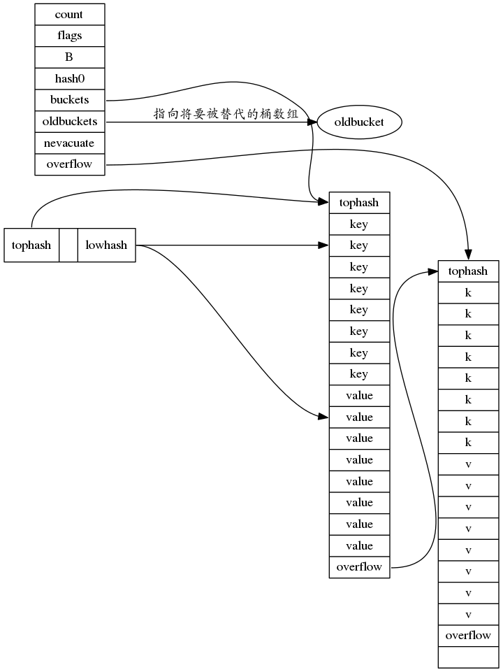

map当中bool真的值得优化成struct{}{}吗?
首先抛出一个问题,在Go中当我们想实现一个集合的时候,可以用map来实现.而map本身就可以通过”comma ok”机制来获取该建是否存在,例如_ , ok := map["key"],如果没有对应的值,ok为false,以此就可以实现集合.有时候我们会选择map[string]bool这类方式来定义这个集合,但是因为有了”comma ok”这个语法,还可以定义成map[string]struct{}的形式,值不再占用内存.
后者可以表示两种状态有或者无,而前者其实有三种状态,有的时候表示true或者false,或者没有.
很多时候我们会选择map[string]struct{}来表示集合的实现,但是这样真得值得么?
这里要从map的实现说起.map的实现是一个hash表.表结构由两个结构体表示,分别是hmap和bmap,前者表示这个map结构,后者表示了map的hash表下的bucket结构.
一切要从map的实现开始讲起.
map是由桶数组组成的,每个桶的表示如下.
1 | // A bucket for a Go map. |
而hmap表示如下,其实就是一个头信息.
1 | // A header for a Go map. |
bmap这个结构类似于C的定义,后面其实还有一些成员,但是需要动态申请(runtime自己的malloc),没有定义.
一个bmap会有8个字节的tophash用于定位到桶中对应的entry.每个entry表示一个k-v,这个tophash是key的hash的高位字节.
而定位桶用的是hash的低位字节.在go中每个类型都会有自己的hash方法.
为了防止对齐问题,所以先排8个key,再排8个value.举个例子如果是map[int8]int64,那么k-v排在一起的话,就会空7个字节,非常浪费.
但是先排8个int8的话就不会出现对齐的问题.最后一个结构是桶指针,指向串联的桶.
而整个hmap是一个bmap的数组,主要是管理信息.
内存分布如图.

hmap的增长是依赖于负载系数的,在go里面负载系数(loadFactor)是6.5,这个值是一个通过测试得到的比较理想的一个值.
这个值的意思表示的是,每个桶平均装下的entry数量是6.5个,之前我们提到了每个桶的大小是8.也就是说bucket一般都不会装满.
如果要负载系数高,也就是桶尽量装满,就会导致hash碰撞率较高(可以hash到的空间不大),这样会产生过多的overflow的bucket.
如果要负载系数低,hash碰撞率比较低,这样会使得空间很大,导致真正利用率(存入的数据/全部bucket空间)相对变小.
所以综合情况负载系数6.5是一个比较理想的值,这也是go现在采用的值.
这个可以通过决定增长的关键代码发现:
1 | for ; hint > bucketCnt && float32(hint) > loadFactor*float32(uintptr(1)<<B); B++ { |
2^B是桶的数量,hint是申请的map的大小,bucketCnt就是8,因为预先会分配一个桶,如果一个桶都不会超过的话就不增加了.
关键是hint要保证大于负载系数*桶的数量,换句话说要保证平均每个桶装6.5个k-v能容得下hint这么多对k-v.
上面说得是静态分配,动态增长的时候oldbuckets是buckets的一半,也就是翻倍增长.
hmap在增长的时候会把bueckets变成oldbuckets然后再申请新的buckets.buckets中的k-v是不会移动到别的桶当中去的.
这样保证了遍历时候的一致性.hashmap按照range遍历的时候是按bucket数组的一个bucket开始然后bucket的串联bucket再回到
bucket数组的下个元素依次遍历.
删除非常简单,仅仅是把对应的key和value置为空.
现在把map的实现说清楚以后我们可以算一笔账.假设我们的map定义为map[string]struct{}{},
在64bit的操作系统下面一个桶的大小是 8 + 816 + 80 + 8 = 144个字节(string 是常量只含一个指针和一个len值).
如果是map[string]bool{},那么一个桶的大小是 8 + 816 + 81 = 152个字节.
换算下来节省的空间大概是5.2%,考虑到负载系数是6.5,换成百分比是81.25%这个程度,省8个字节的事情完全是多余的.
与其牺牲语义取巧节省这几个字节不如定义一个表示清晰的map来的更直接.
所以我的结论是map[string]struct{}并不可取.